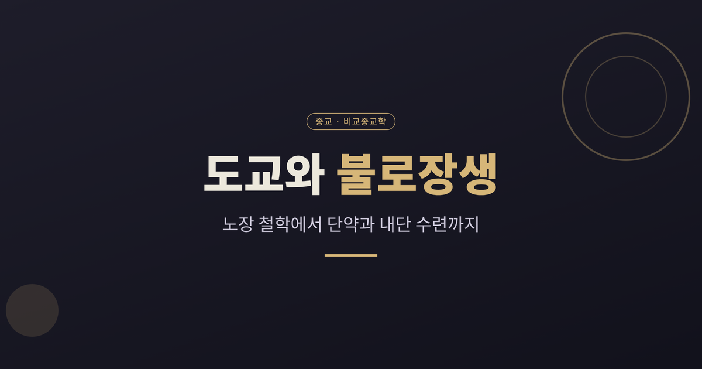
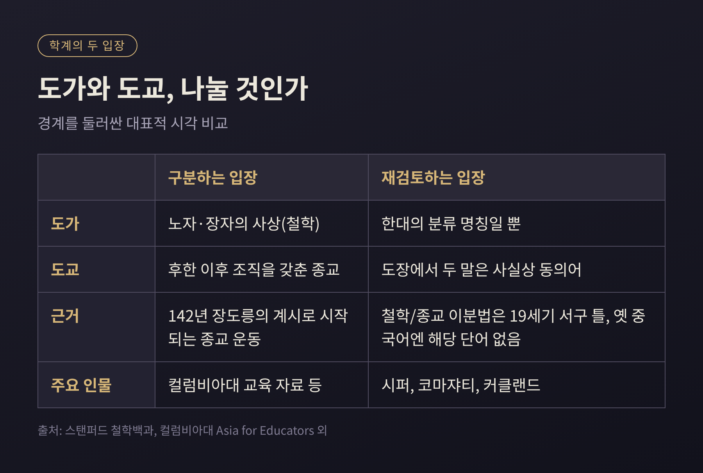
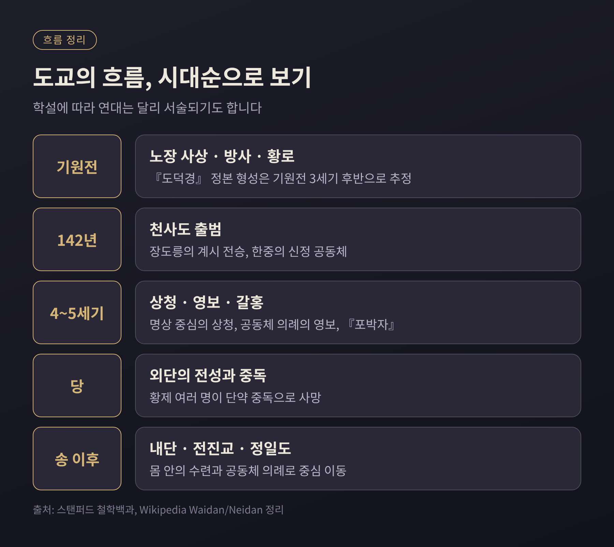
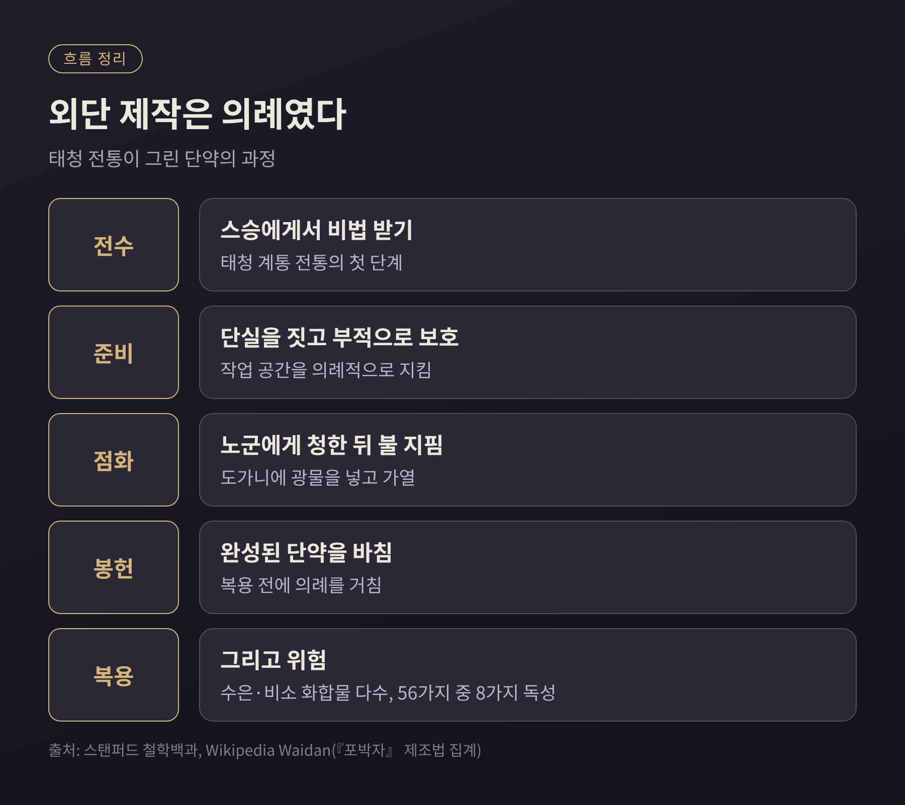
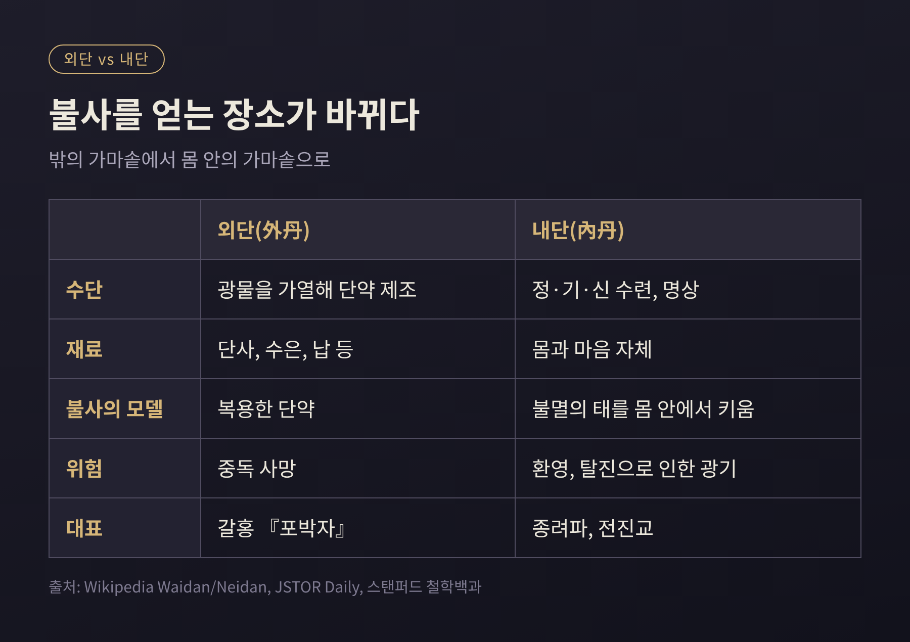
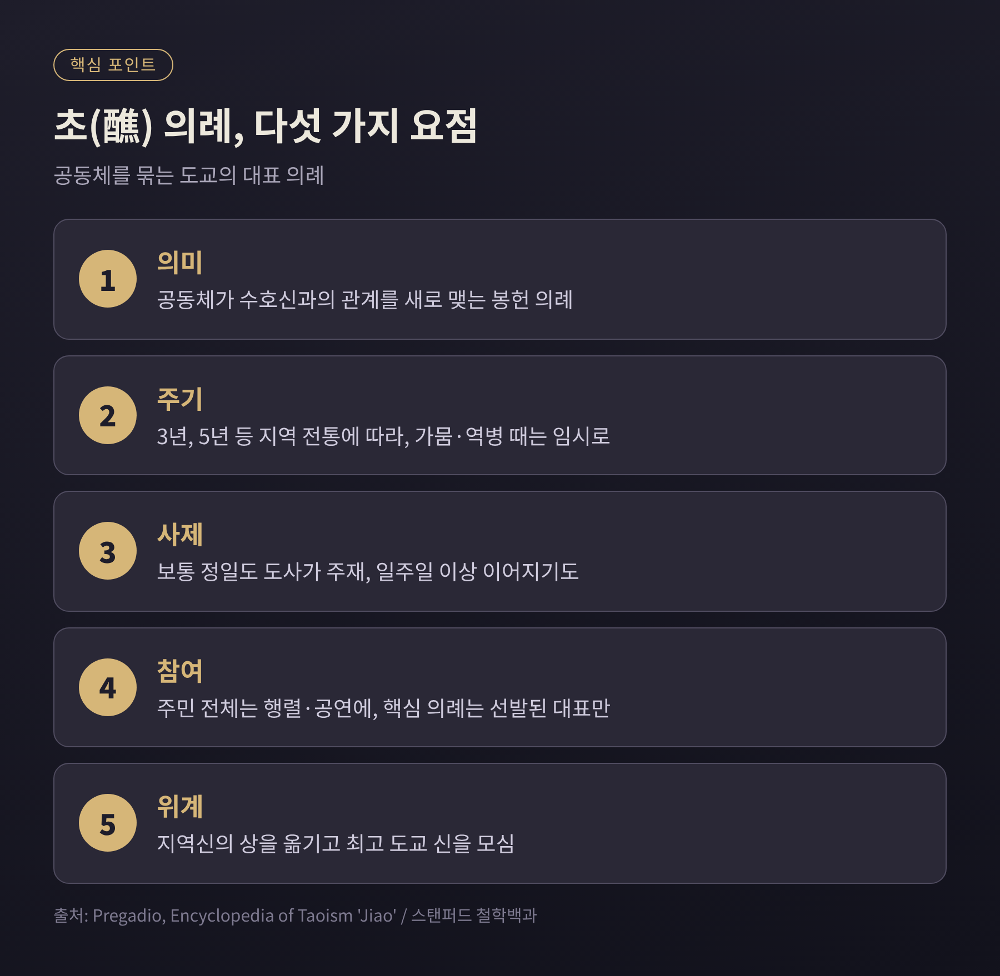
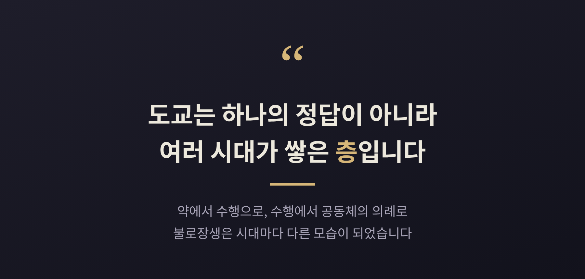

오늘은 도교와 불로장생의 관계를 종교학의 관점에서 정리해 보려 합니다.
『도덕경』과 『장자』의 철학, 종교로서의 도교, 그리고 불멸을 향한 수행이 어떻게 이어지고 갈라지는지 살펴봅니다.
먼저 결론부터 말씀드리면, 도가와 도교를 칼로 자르듯 나누는 관행은 학계에서 이미 재검토되고 있습니다.

흔히 노자와 장자의 사상은 도가, 후한 이후 조직을 갖춘 종교는 도교라고 부릅니다.
도가라는 말은 한나라의 역사가 사마담이 학파를 분류하며 쓴 데서 나왔습니다.
도교라는 말은 5세기의 도사 육수정이 불교와 구별하려고 쓴 것으로 설명됩니다.
예전엔 이 둘을 철학과 종교로 나누는 것이 상식이었습니다. 지금은 사정이 다릅니다.
철학과 종교라는 이분법은 19세기 선교사 제임스 레게 이후 퍼진 틀이라는 지적이 있습니다.
루이스 코마쟈티는 이 구분을 유지하기 어렵다고까지 평가합니다.
크리스토퍼 시퍼는 명나라 『도장』에서 두 용어가 사실상 같은 뜻으로 쓰였다고 봅니다.
전통 중국어에는 철학이나 종교에 해당하는 단어 자체가 없었다는 점도 근거로 제시됩니다.
다만 구분이 완전히 쓸모없다는 뜻은 아닙니다.
컬럼비아대 교육 자료처럼 도가는 사상, 도교는 142년 장도릉이 받은 계시에서 시작한 종교 운동으로 나누어 설명하는 입장도 여전히 널리 쓰입니다.
이 글에서는 편의상 두 용어를 쓰되, 경계가 흐릿하다는 점을 염두에 두겠습니다.
『도덕경』의 저자 노자가 실존했는지도 논쟁거리입니다.
스탠퍼드 철학백과는 현재 학계가 역사적 노자의 존재를 거의 부정한다고 정리합니다.
곽점과 마왕퇴에서 출토된 필사본으로 보아, 이 책은 기원전 3세기 후반 무렵 지금의 형태로 모였을 것이라 봅니다.
종교 도교의 뿌리는 여러 갈래입니다.
기원전 4세기부터 통치자를 섬긴 방사(方士), 부적과 약초를 쓰던 치유사, 한나라 초 노자와 황제를 함께 받든 황로 사상이 그 재료입니다.
2세기 후반에는 노자가 태상노군이라는 신으로 그려지기 시작합니다.
그리고 142년이 전통적인 천사도의 출발점입니다.
태상노군이 장도릉에게 나타나 계약을 맺었다고 전합니다.
손자 장로는 지금의 쓰촨 한중에서 24개 행정 단위를 둔 신정 공동체를 운영했습니다.
신자는 장부에 등록되었고, 병은 도덕적 잘못의 결과로 여겨 하늘과 땅과 물의 관리에게 청원서를 올렸습니다.
오늘날 정일도가 이 흐름을 잇습니다. 정일도의 도사는 결혼해 가정을 이룹니다.
불멸의 이상은 어디서 왔을까요.
브리태니커는 『장자』 같은 초기 문헌의 불멸한 존재 묘사가 우화였을 수 있다고 설명합니다.
그런데 일부 추종자들이 이를 문자 그대로 받아들였습니다.
불사약을 찾고, 호흡을 조절하고, 곡식을 끊는 갖가지 방법이 여기서 나왔습니다.
이 과정에서 연금술과 비전 기법이 쌓였다는 것이 일반적인 설명입니다.
신선, 곧 선(仙)은 신(god)과 다르다는 점도 짚어 두겠습니다.
스탠퍼드 철학백과에 따르면 신선이 되는 길은 크게 둘입니다.
도와 하나가 되는 길, 그리고 천상의 관료 체제에 편입되는 길입니다.
죽은 듯 보이지만 정련된 몸으로 산에 은거한다는 시해(尸解)라는 관념도 있습니다.
일부 학자는 시해를 속임수에 가깝다고 보지만, 도교 문헌은 이를 금지된 일이 아니라 낮은 단계의 임시 방편으로 다룬다고 합니다.

외단(外丹)은 광물과 금속을 도가니에 넣고 가열해 불사의 단약을 만드는 방법입니다.
갈홍(283~343)의 『포박자』가 대표 문헌입니다. 스무 편 가운데 두 편이 외단을 다룹니다.
「금단」 편은 단사(朱砂)를 비롯한 광물 처방을 담았고, 「황백」 편은 금과 은을 만드는 법을 다룹니다.
갈홍은 외단이 치유나 퇴마, 명상보다 높은 경지로 이끈다고 주장했습니다.
흥미로운 대목은 이것이 단순한 실험이 아니라 의례였다는 점입니다.
태청 계통의 전통에서는 스승에게서 비법을 전수받고, 부적으로 작업 공간을 지키고, 단실을 짓고, 노군에게 청한 뒤에야 불을 지핍니다.
완성된 단약은 봉헌한 다음에 복용합니다.
문제는 재료였습니다.
『포박자』에 실린 56가지 제조법 가운데 8가지는 독성이 있는 것으로 집계됩니다.
많은 처방이 비소와 수은 화합물을 썼고, 수은 중독에서는 환각이 가장 흔한 증상으로 보고됩니다.
역사에는 비극이 남았습니다.
당나라 무종과 선종이 단약 중독으로 숨졌고, 헌종과 목종도 같은 이유였을 것으로 추정됩니다. 문헌에 따라 희생된 황제의 수는 달리 헤아립니다.
시인 백거이는 수은과 단사를 직접 달였으나 성공하지 못했고, 벗들이 중년을 넘기지 못하고 세상을 떠났다고 한탄했습니다.
진시황의 이야기도 이 맥락에 놓입니다.
기원전 219년 진시황은 서복을 보내 봉래산에서 불사약을 찾게 했습니다.
서복은 두 차례 바다로 나갔다가 돌아오지 않았습니다. 그가 일본에 닿았다는 전설이 있지만, 학자들은 증거 부족을 이유로 의견이 갈립니다.

당나라 후반부터 불사의 추구는 서서히 몸 안으로 옮겨 갑니다.
내단(內丹)은 광물 대신 정(精), 기(氣), 신(神)이라는 세 가지 보물을 수련해 근원의 도로 돌아가려는 체계입니다.
스탠퍼드 철학백과는 이를 불멸의 태아를 잉태하고 낳는 일에 비유한다고 소개합니다.
외단이 사라진 이유는 두 갈래로 설명됩니다.
JSTOR Daily 같은 글은 중독 사망이 잇따라 인기가 떨어졌다고 서술합니다.
반면 다른 정리는 외단과 초기 내단이 당대에 함께 발전했으며, 원인이 중독만은 아니라고 강조합니다.
하나로 단정하기보다 두 설명을 함께 기억하시는 편이 정확합니다.
내단이라는 말의 기원에도 이견이 있습니다.
559년 남악혜사의 서원에서 찾는 학자, 진나라 허손의 문헌을 근거로 드는 학자가 있고, 이 근거들을 의심하는 학자도 있습니다.
현존하는 내단 문헌은 8세기 전반으로 올라가고, 988년 유희월의 시에 내단과 외단이라는 말이 함께 나타납니다.
뚜렷한 첫 계보는 당의 종리권과 여동빈으로 이어지는 종려파입니다.
내단이라고 안전했던 것은 아닙니다.
JSTOR Daily는 마귀 같은 환영을 보거나 탈진으로 광기에 빠지는 위험이 있었다고 전합니다.
12세기에는 왕중양이 금나라 치하에서 전진교를 세웠습니다.
독신 수도원을 중심으로 명상과 내단을 닦는 교단입니다.
이후 왕창월(1592~1680)이 청나라의 지지를 얻으며 용문파가 전진의 주류가 되었고, 베이징 백운관이 중국도교협회의 본부가 되었습니다.

불로장생이 도교의 전부는 아닙니다.
오늘날 도교가 일상에서 하는 일은 대부분 의례입니다.
대표적인 의례가 초(醮)입니다.
마을이나 동업 조합 같은 공동체가 3년, 5년 등 주기로 열어 수호신과의 관계를 새로 맺는 제의입니다.
가뭄이나 역병이 닥치면 임시로 열기도 합니다.
행사는 일주일 넘게 이어지고, 행렬과 공연에는 주민 전체가 참여하지만 핵심 의례는 선발된 대표만 지켜봅니다.
의식 중에는 지역신의 상을 높은 자리에서 옮기고 최고 도교 신의 그림을 모십니다.
지역신의 권위가 더 높은 도교 신에게서 온다는 위계를 눈에 보이게 하는 장치로 설명됩니다.
공동체의 초는 송나라 이전에는 없었다고 합니다.
그 전에 공동체 의례는 정화와 참회에 무게를 둔 재(齋)라고 불렸습니다.
재는 지금도 초에 앞서 죄를 참회하는 의례로 이어집니다.
이런 의례를 맡는 사제는 대체로 세습되며, 신과의 소통은 문서와 부적으로 이루어집니다.
도관은 사제를 키우고 서품하는 기관이기도 했습니다.
제국 시대 정부는 각 지방에 도교와 불교의 사원을 두도록 요구했고, 당나라에서는 과거 응시자가 도교 경전을 시험 보았습니다.
당 황실이 노자를 조상으로 내세운 것도 같은 맥락입니다.
도교는 때로는 정부를 갈아엎겠다는 운동으로, 때로는 국가를 보완하는 교단으로 정치와 얽혔습니다.
현대 중국에서는 1966년부터 10년간의 문화대혁명 때 많은 도사가 환속하고 도관이 파괴되었습니다.
이후 도관이 재건되고 서품이 재개되었으며, 1996년 집계로 집에서 생활하며 의례를 맡는 도사가 약 2만 명이었습니다.
현재 중국 정부는 도교를 공인 종교의 하나로 두고 도교협회를 통해 관리합니다.

한국에서는 624년이 하나의 이정표입니다.
당 고조가 천존상과 도사를 보내 고구려에서 『도덕경』을 강론하게 했다고 『삼국유사』가 전합니다.
보장왕 때는 연개소문의 건의로 도사 8명과 『도덕경』이 들어왔습니다.
신라에서는 587년 대세와 구칠이 산에서 수도해 신선이 되려 했다는 기록이 있습니다.
고려에서는 1110년 북송의 도사 두 명이 와서 국가 도관인 복원궁을 세웠고, 예종은 『도덕경』 강론을 열었습니다.
조선에서는 소격서에서 초제를 올렸으며, 16세기에서 18세기 사이에 내단 수련이 번성했다고 설명됩니다.
다만 이런 기록은 자료마다 연대와 서술이 조금씩 다릅니다. 연도는 참고용으로 읽으시길 권합니다.
정리하면 이렇습니다.
도교의 불로장생은 약을 먹어 영원히 사는 이야기에서 시작해, 몸과 마음을 닦는 수행으로 옮겨 가고, 공동체를 지키는 의례로 이어졌습니다.
연금술의 비극이 있었고 정치와의 얽힘이 있었으며, 그 모든 것을 학자들이 아직도 다르게 읽고 있습니다.

이 글은 종교의 교리가 참인지를 가리려는 것이 아니라, 역사와 문헌에 근거해 현상을 이해하려는 시도였습니다.
죽음을 어떻게 받아들일지 묻는 질문은 어느 시대에나 있었다고, 저는 생각합니다.
불사약 대신 오늘의 호흡을 돌아보는 일이 그 오래된 질문에 대한 가장 조용한 답일지도 모릅니다.